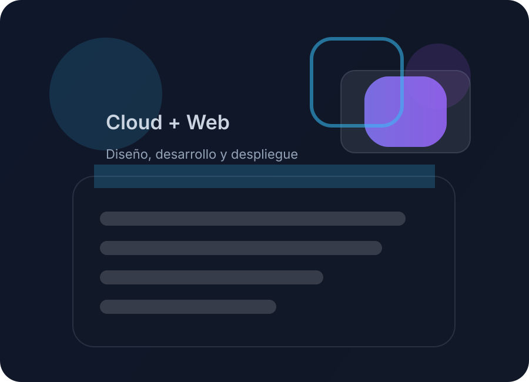

Telegram Chatbot
Chatbot automatizado con n8n y JavaScript que gestiona Google Calendar desde mensajes de Telegram.
Ingeniero Cloud y DevOps
Ingeniero Cloud con experiencia en AWS y HashiCorp Terraform, enfocado en automatización, nube y aprendizaje continuo dentro de DevOps.

Creo soluciones en la nube y aplicaciones web que impulsan el crecimiento con tecnología confiable y automatización inteligente.
Soy Ingeniero Cloud con experiencia en AWS y HashiCorp Terraform. Cuento con certificaciones en AWS, Microsoft y HashiCorp, y sigo ampliando mis conocimientos en nube y DevOps.
Además de construir infraestructura con Terraform, colaboro en proyectos de equipo utilizando Git y GitHub, y aplico herramientas de automatización para optimizar procesos. Me apasiona investigar y compartir conocimientos sobre la nube y la seguridad.
He liderado grupos de estudio en Accenture para certificaciones AWS y apoyado la capacitación de estudiantes universitarios en GCP, enseñando los viernes durante dos años.
En Accenture desarrollé IaC con Terraform y CloudFormation, construí pipelines ETL con AWS Lambda y AWS Glue, y gestioné datos en Snowflake y Amazon S3.
HTML, CSS, JavaScript, jQuery, ingeniería de prompts, IA y desarrollo frontend moderno.
AWS, GCP, Terraform, CloudFormation, AWS Lambda, AWS Glue y Amazon S3.
Node.js, Python, PHP, SQL, desarrollo de APIs REST y consumo de servicios JSON.
GitHub Actions, n8n, CI/CD, ETL y orquestación de procesos en la nube.
Certificaciones en AWS, Microsoft y HashiCorp que respaldan mi experiencia en la nube, infraestructura como código y automatización.
Fundamentos de cloud computing, AWS core services y mejores prácticas.
Diseño de arquitecturas escalables, seguras y altamente disponibles en AWS.
Infraestructura como código con Terraform y gestión de entornos reproducibles.
En preparación enfocado en operaciones, monitoreo y automatización de infraestructuras AWS.
Experiencia profesional en infraestructura cloud, desarrollo web y automatización de procesos.
Infra Management Service Associate (octubre 2022 - presente)
Full Stack Web Developer (julio 2022 - octubre 2022)
Ejemplos de trabajos que demuestran mis capacidades en desarrollo y nube.
Chatbot automatizado con n8n y JavaScript que gestiona Google Calendar desde mensajes de Telegram.
Participación en programa intensivo con experiencia en backend usando Node.js y mejores prácticas de desarrollo.
Automatización de despliegues y administración de recursos en AWS y GCP para soluciones escalables.
¿Tienes un proyecto o quieres colaborar? Estoy listo para asumir nuevos desafíos en la nube, DevOps y desarrollo web.
Teléfono: +52 9993877042
Email: luisma0330@gmail.com
LinkedIn: linkedin.com/in/luis-o-27531793
GitHub: github.com/luisma0330
Idiomas: Español nativo, Inglés B2
Soft skills: Trabajo en equipo, adaptabilidad, resolución de problemas